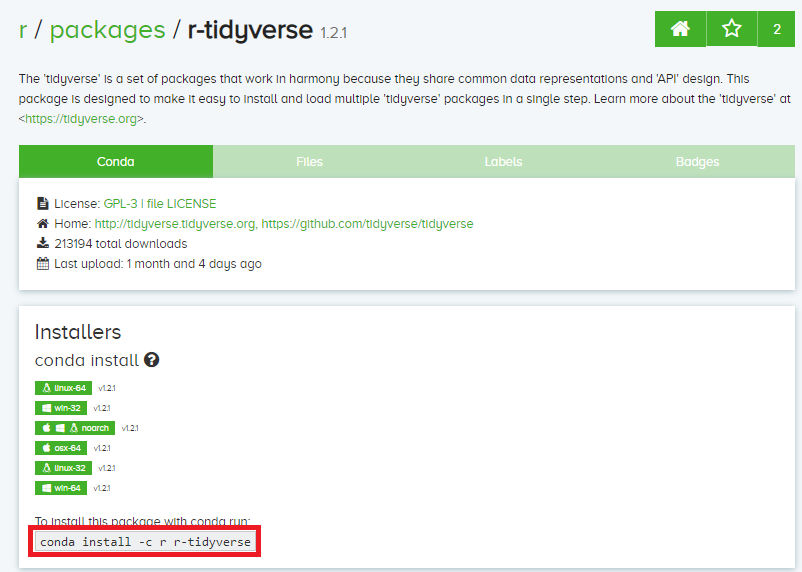

R in Dalma Miniconda¶
Apart from a centralized installation of R, we also have a Miniconda installation of R (ver=3.6) as part of the Miniconda module in Dalma. This provides greater flexibility and easier installation for other complementary packages required for R (eg: Tidyverse, Rstan etc). To find more details on the Miniconda module usage, click here.
Tip
If you have never used Conda, we recommend you to use Dalma Miniconda. You can find the steps to set up Dalma Miniconda by clicking here.
Note
The conda cheat sheet gives you a list of useful commands in a glance: Conda-cheat-sheet
How to clone the R environment¶
- If you are using Dalma Miniconda
This creates an exclusive local environment (installation) of the R package in the given path (in the example below, the path is “/scratch/wz22/my-envs/R”). The User can now activate this environment and use it and further install any required complementary packages in the activated environment (More details on this in upcoming sections).
#conda create -p /scratch/<NetID>/conda-envs/R --clone R-3.6 #or #conda create -n <name of the new env> --clone <existing env> #example: conda create -p /scratch/wz22/conda-envs/R --clone R-3.6 #or conda create -n R --clone R-3.6
A sample output is shown below:

Note
It must be noted that the given path is not the path to the working directory, but the location where the user wishes to install the environment. The user can navigate to any directory (where his application and running script resides) and activate the required environment.
If you are using your own conda package
#conda create -p /scratch/<NetID>/conda-envs/R --clone <path-to-existing-env> #or #conda create -n <name of the new env> --clone <path to existing env> #example: conda create -p /scratch/wz22/conda-envs/R --clone /share/apps/NYUAD/miniconda/3-4.8.2/envs/R-3.6 #or conda create -n R --clone /share/apps/NYUAD/miniconda/3-4.8.2/envs/R-3.6
Finding the Conda complementary packages (Tidyverse, Rstan etc)¶
- Search on the web for the Conda package of the required library.
For instance, if the required library is Tidyverse, you can search for “conda install r tidyverse”. You can then navigate to the link with anaconda (most probably the first one, like here).
- Find the installation command from the anaconda link
The page should look something like this :
The command highlighted in red box is the command for installing the required package.
How to install the Conda complementary packages¶
- Activate the local R environment
you can find more about managing environments, by clicking here.
#conda activate <path to local env> #or #conda activate <name of the environment> #example: conda activate R
- Install the required package
Paste the installation command found on the Anaconda web page as described above. Enter
ywhen it prompts for confirmation.#example: conda install -c r r-tidyverseA sample output is shown below:

Warning
It must be noted that the complementary packages must be installed only after activating the local R environment.
- Once the installation is done, launch R and check the installation of the package using the “library( )” function of R.
A sample output is shown below: .. image:: ../img/R4.png
Submitting Job Scripts¶
The conda environment might not get activated when submitting a Job script since the slurm doesn’t source the bashrc file. Hence, in order to go about this, you can include the following line in your job submission script before activating the required environment.
source ~/.bashrc
A sample job submission script is shown below:
#!/bin/bash
#SBATCH -n 10
#SBATCH -t 48:00:00
#Other SBATCH commands go here
#Activating conda
source ~/.bashrc
conda activate R
#Your appication commands go here
Rscript abc.R
See also
Go through the Conda 30 mins test drive to make sure you understand the basic concepts: https://conda.io/projects/conda/en/latest/user-guide/tasks/manage-environments.html